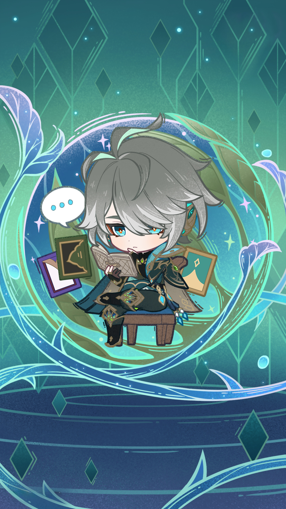
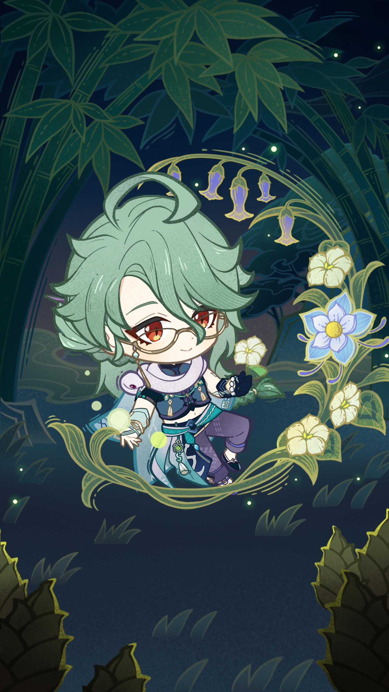
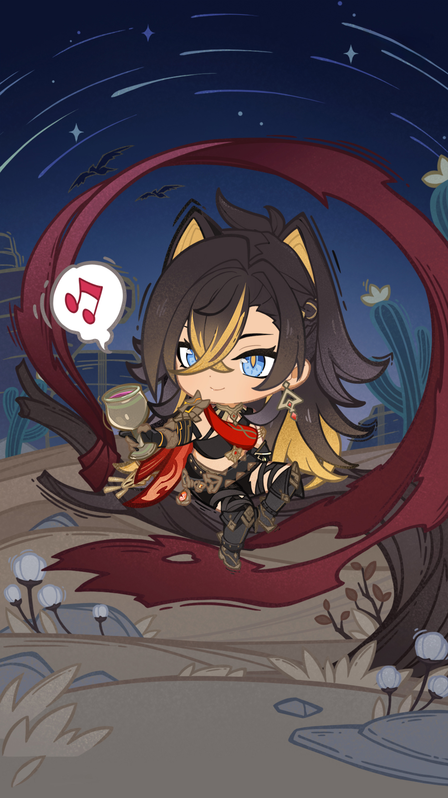
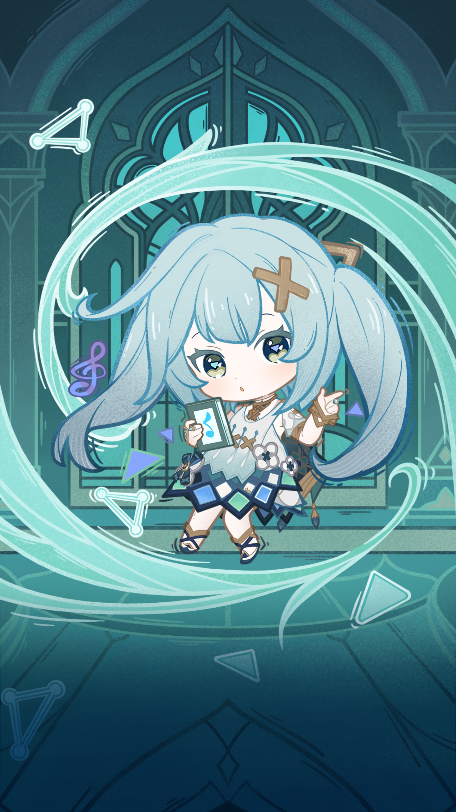
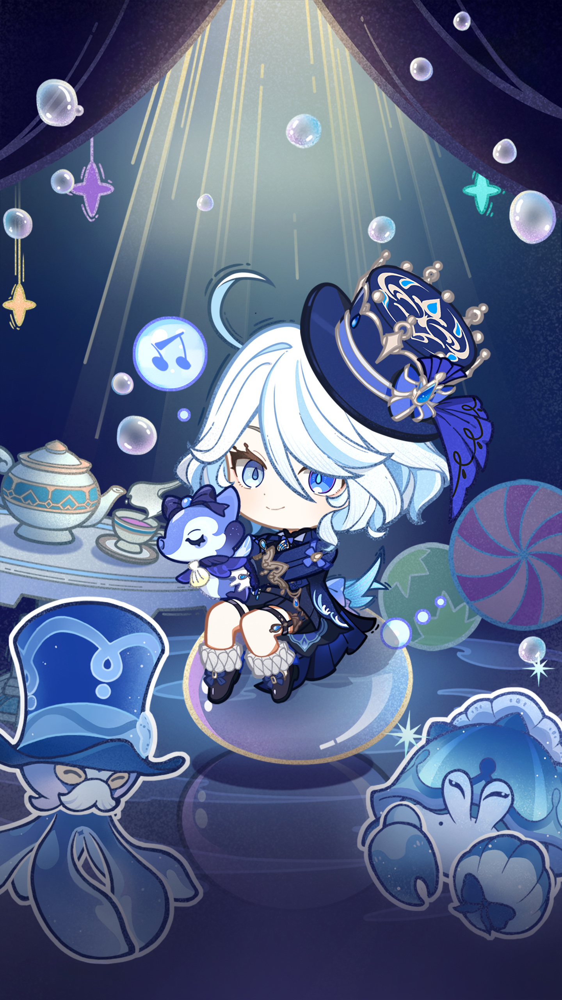
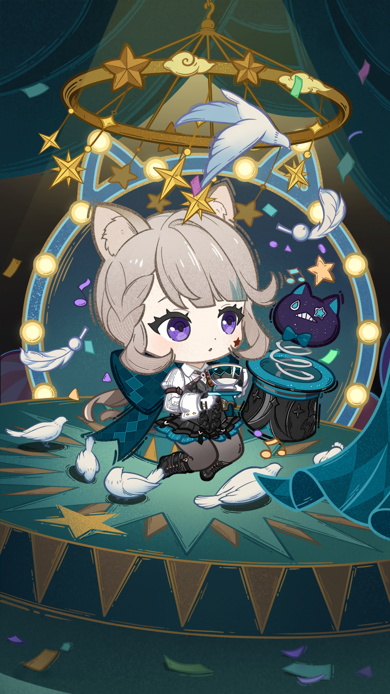
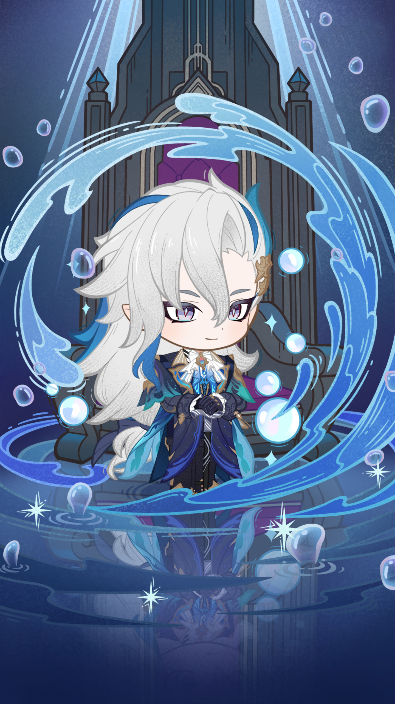
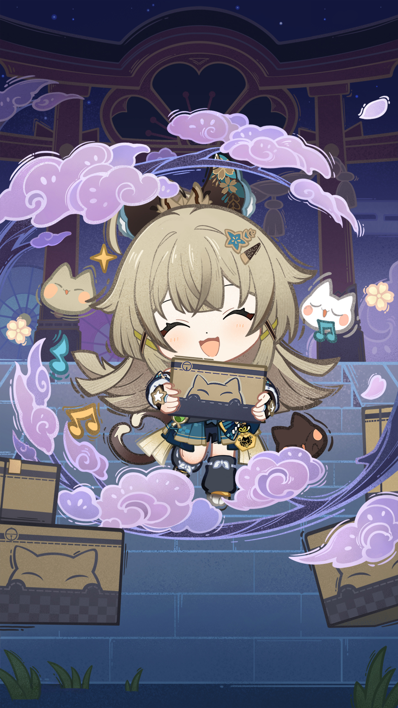
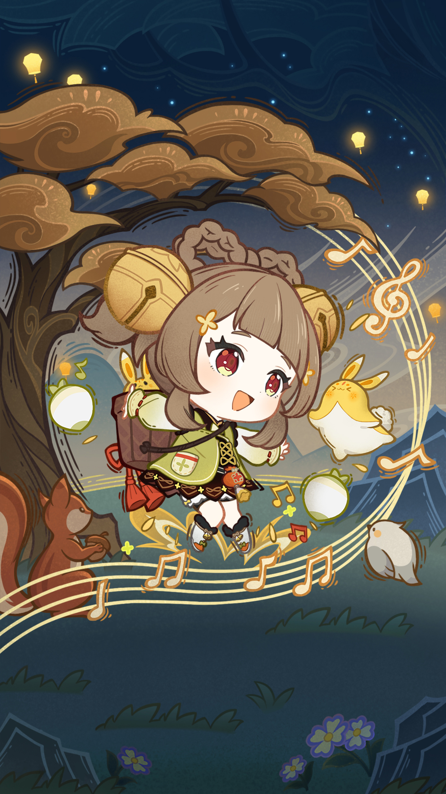

角色选择与培养

在《原神》中，角色的选择与培养至关重要哦！
我发现，优先培养主DPS角色可以让你的队伍在战斗中更具优势💪。
其次，辅助角色也不可忽视，它们能为你的输出提供很好的支持✨。
1️⃣ 主DPS优先
：我的经验是，主DPS角色是队伍的核心输出💥。比如我舍友在玩的时候，总是优先培养她的迪卢克，这样她的伤害输出才会飞速提升🔥。记得选择适合自己的主DPS，让战斗变得轻松有趣哦！😊
2️⃣ 辅助角色次之
：我发现，辅助角色在战斗中同样非常重要🌟。像我姐姐常用的琴，不仅能治疗，还能提供增益效果✨。这样一来，队伍就能保持持续作战能力，让你在挑战中游刃有余👍。所以别忘了给辅助角色留出培养空间哦！
3️⃣ 队伍平衡提升
：我的经验是，一个平衡的队伍能够大幅提升整体战斗力。比如，我的同学总是把输出、治疗和控制角色搭配在一起，这样无论面对什么情况都能应对自如💡。确保你的队伍里有不同类型的角色，可以让你在游戏中更加游刃有余哦！😊
角色等级提升

在《原神》中，角色的等级提升是非常重要的哦！
通过完成任务和打怪，我们可以获得大量经验值，快速提升角色的等级 🎮✨。
我发现，这样不仅能增加角色的基础属性，还能显著提高我们的战斗力 💪🔥。
1️⃣ 任务刷怪升级 ：我的经验是，完成主线任务和支线任务是最有效的升级方式 🚀！
特别是有些任务会给予丰厚的经验奖励，让你一口气升好几级 🌟。
另外，打怪也是一个不错的方法，尤其是在刷副本时，可以顺便收集材料，一举两得哦！
2️⃣ 提升基础属性 ：我发现，角色等级提升后，基础属性会相应增强，这对战斗真的很有帮助 💥！
比如攻击力和防御力都会提高，让我们在面对强敌时更加从容不迫 🛡️✨。
所以，尽量多参与各种活动和挑战，确保你的角色能够快速成长！
3️⃣ 增加战斗力 ：通过不断提升角色等级，我们的整体战斗力也会随之增加 🔥💪。
这让我在面对高难度副本时，不再感到畏惧，而是充满信心 😄！
记得合理利用树脂和体力来刷副本，这样才能更快积累经验，成为真正的冒险家哦！
武器选择

在《原神》中，武器的选择对角色的战斗力至关重要哦！
我发现，四星武器在性价比上非常出色，特别适合新手玩家使用！🎯
合理选择武器，可以让你的冒险之旅更加顺利和愉快！✨💪
1️⃣ 四星性价比高 ：我的经验是，四星武器的性价比真的是无敌了！💥
它们不仅获取相对容易，而且属性提升也非常不错，可以帮助你快速提升战斗力！🌟
像我舍友刚开始玩的时候，就用了一把四星武器，结果打怪轻松多了！👍
2️⃣ 适合新手过渡 ：对于新手来说，四星武器简直是过渡神器！🛡️
我记得刚开始的时候，我用的就是西风系列，简单易上手，效果也很赞！🎉
这让我的游戏体验变得更顺畅，不用担心装备问题！😊
3️⃣ 充能类武器优先 ：如果你不确定选哪个武器，我建议优先考虑充能类的哦！🔋
这些武器能帮助你更快地回复元素能量，让技能释放频率大大提升！🔥
我姐姐刚开始玩时就选了祭礼系列，她说真的是打怪必备，让她在副本中游刃有余呢！
圣遗物获取与搭配

在《原神》中，圣遗物是提升角色实力的重要道具哦✨
合理的搭配可以让你的角色发挥出更大的潜力！💪
我发现，前期不必追求极品圣遗物，选择适合角色的属性就好🎯
1️⃣ 合理搭配属性 ：我觉得圣遗物的属性搭配非常关键！🌟
比如说，如果你的主DPS是火元素角色，那么选择增加攻击力和火伤加成的圣遗物会更有效果🔥。
我舍友在搭配时总是先考虑角色的技能特点，效果真的很好哦！👍
2️⃣ 副本任务宝箱 ：获取圣遗物的方法有很多，我最喜欢通过刷副本和完成任务来获得！🎉
尤其是那些隐藏宝箱，里面常常会有意想不到的惊喜哦！🎁
记得多探索一下地图，很多地方都藏着宝箱呢！🔍
3️⃣ 前期不必极品 ：我个人认为，刚开始的时候不必太纠结于极品圣遗物💎。
选择适合角色属性的就好，比如生命值、攻击力等，这样可以快速提升战斗力！🚀
我的姐姐就是这样做的，她玩得很开心，也提升得很快呢！😊
主线任务

在《原神》的冒险旅程中，主线任务是你不可或缺的伙伴哦！
它不仅能帮助你快速提升冒险等级，还能让你更深入地了解这个奇妙的世界 🌍✨。
我发现，完成主线任务的同时，还能收获丰厚的奖励和丰富的剧情体验 🎉！
1️⃣ 优先完成主线 ：我个人觉得，在游戏初期，优先完成主线任务真的很重要 👍！
这不仅能帮助你快速解锁新区域，还能提升你的冒险等级，让你体验到更多精彩内容 🌟。
我的舍友就是因为专注主线，才在短时间内就成为了高手哦！ 😄
2️⃣ 丰厚奖励升级 ：每完成一个主线任务，你都会获得丰厚的奖励 🎁！
这些奖励不仅包括经验值，还有各种资源，比如原石、角色经验书等 💎。
我记得我第一次完成主线任务时，获得了不少好东西，感觉瞬间升级了好几级呢！ 🚀
3️⃣ 剧情了解重要 ：主线任务也是了解游戏剧情的重要途径哦 📖！
通过这些任务，你可以逐渐揭开这个世界的秘密和角色背后的故事 🌌。
我的姐姐特别喜欢跟我分享她在做主线时遇到的有趣剧情，每次都让我忍不住想继续玩下去 😂！
传说任务与世界任务

在《原神》的世界中，传说任务和世界任务是不可或缺的部分 🌍✨。
它们不仅能帮助我们获取丰厚的奖励 🎁，还让我们更深入地了解角色的故事和背景 📖。
我发现，完成这些任务真的能让游戏体验更加丰富多彩 🎨，一起探索吧！
1️⃣ 丰富游戏体验 ：我个人觉得，传说任务和世界任务就像是游戏中的调味料 🍜。
它们让整个故事变得生动有趣，让我对角色有了更深的理解 ❤️。
比如，有一次我完成了某个角色的传说任务，发现她背后有着不为人知的故事，这让我对她产生了更深的情感联结 🌈！
2️⃣ 获取丰厚奖励 ：完成这些任务可以获得大量原石和经验值 💎📈！
我的舍友每次都提醒我先做这些任务，因为奖励实在太丰厚了 🎉。
有一次，我通过完成一个世界任务获得了超多材料，直接提升了我的角色等级，真是太划算啦！
3️⃣ 解锁角色故事 ：传说任务通常与特定NPC有关，完成后不仅能获得奖励，还能解锁他们的故事 📚✨。
我记得第一次解锁某个角色的背景时，感觉像打开了一扇新世界的大门 🚪。
这让我更加投入到游戏中，也让我对每个角色都有了更多的期待和好奇心 😍！
日常委托与活动

日常委托是《原神》中非常重要的日常任务之一，
我发现完成这些任务不仅简单快捷，还能获得丰厚的奖励哦！🎁✨
而且，参与各种活动更是让我们收获满满的好机会！🌟🎉
1️⃣ 任务简单快捷 ：日常委托的任务真的超级简单，
我每次都能在短时间内完成，感觉像是在做小游戏一样！🎮💨
而且每天都能获得不少经验和原石，真的是新手玩家的福音啊！👍✨
2️⃣ 参与活动奖励 ：我总是关注游戏中的各种活动，因为参与活动可以获得大量原石和其他资源！💎🎊
比如最近的某个活动，我通过完成挑战获得了超多奖励，心里乐开了花！🌈😄
所以一定要记得时刻留意活动信息哦！📅✨
3️⃣ 每日必做 ：我每天上线后都会优先完成日常委托，这已经成为我的习惯了！⏰❤️
因为这样不仅能快速提升冒险等级，还能积累丰富的游戏资源，让我在游戏中更有底气！💪🌟
所以，新手朋友们一定要把它当作每日必做哦！😉👍
树脂与体力

在《原神》中，树脂和体力是非常重要的资源哦！🌟
树脂用于刷副本获取珍贵材料，而体力则是进行日常活动的基础。💪
我发现合理管理这两者，可以让你的游戏体验更加顺畅，避免资源浪费。🎮✨
1️⃣ 资源获取关键 ：树脂是刷副本和获取稀有资源的关键，我的经验是每天都要尽量用完这些树脂！💎
通过完成日常任务、活动和副本，你可以获得大量的奖励哦！🎉
记得关注每日重置时间，合理利用这些资源，让你的角色快速成长！🚀
2️⃣ 45级前保留 ：在45级之前，我建议大家适当保留一些树脂，以便后期刷金色圣遗物。🛡️
我舍友就是因为提前用完了树脂，导致后面很难获取想要的装备，真心不值啊！😅
所以，适当保存树脂，可以让你在关键时刻更加游刃有余哦！👍
3️⃣ 合理规划 ：我发现合理规划使用体力和树脂，可以大大提升效率！📈
比如，先完成日常委托，再使用体力去探索，这样不仅能获得经验，还能收集到更多资源！🗺️
记得定期查看活动，有时候会有意想不到的惊喜等着你哦！🎊
加入社群

加入游戏社群是提升你在《原神》中的体验的重要一步哦！
我发现，和其他玩家交流心得，可以让你更快上手各种玩法和技巧！
通过社群，你不仅能获得实用的攻略，还能结识到志同道合的小伙伴们！🎮💖🌟
1️⃣ 交流心得经验 ：我个人觉得，加入社群后能和大家分享自己的游戏经历真的很棒！😊
比如我和舍友一起讨论角色搭配时，她给了我很多实用的建议，让我的队伍战斗力大增！💪🎉
2️⃣ 提升游戏水平 ：通过社群，我的游戏水平提升得飞快！🚀
有时候看到别人分享的攻略，我会尝试去实践，结果发现真的有效果，打副本也顺利多了！🌈📈
3️⃣ 结交新朋友 ：在社群中，我还认识了不少新朋友，真的是意外的收获呢！🤗
我们一起组队刷副本、参加活动，不仅增进了感情，还让游戏变得更加有趣！🎊💕